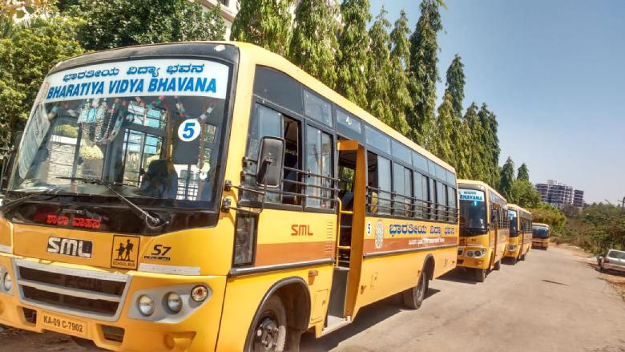

<div class="container pt-5">
  <div class="container-block">
    <div class="d-flex flex-wrap">
      <section id="digiboards">
        <h5 class="page-title bottom-line">Digi boards</h5>
        <div class="d-flex align-items-center">
          
          <p>
            The school has digital/smart boards in all classes from pre-kg to
            class 10. We have partnered with different digital platforms to
            provide a holistic experience and optimize teaching-learning
            experience.
          </p>
        </div>
      </section>
      <section id="computerlab">
        <h5 class="page-title bottom-line">Computer Lab</h5>
        <div class="d-flex align-items-center">
          
          <p>
            The school is equipped with a computer lab of 30 computers and an
            exclusive computer syllabus to match the growing demands of
            technology advancement.
          </p>
        </div>
      </section>
      <section id="transport">
        <h5 class="page-title bottom-line">Transport</h5>
        <div class="d-flex align-items-center">
          
          <p>
            Interested parents can opt for the school bus facility, as the
            transportation covers the major areas in Mysuru.
          </p>
        </div>
      </section>
      <section id="library">
        <h5 class="page-title bottom-line">Library</h5>
        <div class="d-flex align-items-center">
          
          <p>
            The students have access to 3000 plus books and use the library
            which has comfortable seating arrangements.It has a broad range of
            educational resources, including books, magazines, and other
            reference materials.
          </p>
        </div>
      </section>

      <section id="cctvclassroom">
        <h5 class="page-title bottom-line">CCTV enabled Classrooms</h5>
        <div class="d-flex align-items-center">
          <p>
            All the 36 classrooms in the school and other key areas are
            monitored using the CCTV cameras.
          </p>
        </div>
      </section>
    </div>
  </div>
</div>
